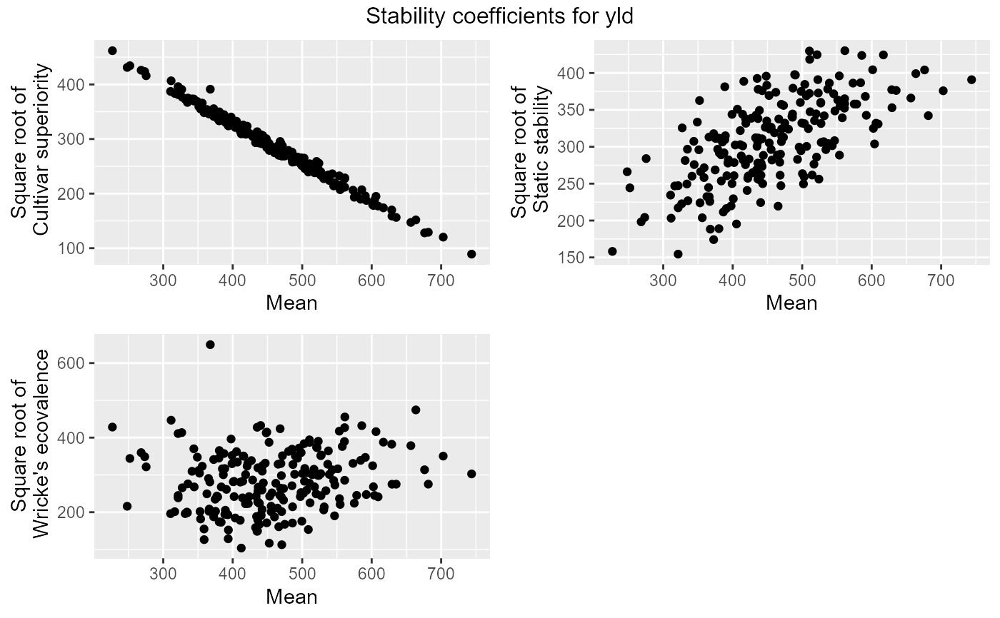

R/gxeStability.R
gxeStability.RdThis function calculates different measures of stability, the cultivar-superiority measure of Lin & Binns (1988), Shukla's (1972) stability variance and Wricke's (1962) ecovalence.
gxeStability( TD, trials = names(TD), trait, method = c("superiority", "static", "wricke"), bestMethod = c("max", "min"), sorted = c("descending", "ascending", "none") )
| TD | An object of class |
|---|---|
| trials | A character string specifying the trials to be analyzed. If not supplied, all trials are used in the analysis. |
| trait | A character string specifying the trait to be analyzed. |
| method | A character vector specifying the measures of stability to be calculated. Options are "superiority" (cultivar-superiority measure), "static" (Shukla's stability variance) or "wricke" (wricke's ecovalence). |
| bestMethod | A character string specifying the criterion to define
the best genotype. Either |
| sorted | A character string specifying the sorting order of the results. |
An object of class stability, a list containing:
A data.frame containing values for the cultivar-superiority measure of Lin and Binns.
A data.frame containing values for Shukla's stability variance.
A data.frame containing values for Wricke's ecovalence.
A character string indicating the trait that has been analyzed.
Lin, C. S. and Binns, M. R. 1988. A superiority measure of cultivar performance for cultivar x location data. Can. J. Plant Sci. 68: 193-198
Shukla, G.K. 1972. Some statistical aspects of partitioning genotype-environmental components of variability. Heredity 29:237-245
Wricke, G. Uber eine method zur erfassung der okologischen streubreit in feldversuchen. Zeitschrift für Pflanzenzucht, v. 47, p. 92-96, 1962
Other stability:
plot.stability(),
report.stability()
## Compute three stability measures for TDMaize. geStab <- gxeStability(TD = TDMaize, trait = "yld") ## Summarize results. summary(geStab)#> #> Cultivar-superiority measure (Top 10 % genotypes) #> genotype mean superiority #> G118 226.8275 213285.9 #> G076 251.9900 188640.3 #> G113 248.1250 185923.6 #> G140 268.2125 181521.7 #> G180 273.3250 179532.3 #> G073 275.3838 173008.6 #> G133 311.3375 165407.6 #> G112 321.4125 156828.7 #> G041 367.7250 153098.9 #> G008 326.6000 152794.6 #> G017 310.5500 149955.2 #> G090 316.5625 147096.2 #> G021 321.4625 147089.7 #> G004 321.4250 145401.7 #> G143 327.2750 142009.5 #> G139 335.4875 140698.0 #> G111 341.4250 139488.0 #> G126 344.0288 139351.6 #> G038 331.5750 139067.9 #> G095 334.0500 137072.9 #> G174 344.5500 136538.3 #> G211 349.0625 135962.9 #> #> Static stability (Top 10 % genotypes) #> genotype mean static #> G042 561.3875 185082.7 #> G091 510.4500 184739.4 #> G194 521.4250 180439.8 #> G055 616.8500 180228.1 #> G061 585.7500 179620.2 #> G103 510.8000 175153.7 #> G130 601.4000 163529.5 #> G192 676.1375 163323.5 #> G028 663.5625 159318.6 #> G037 489.1250 158294.3 #> G145 490.1750 157766.5 #> G172 553.3750 156891.8 #> G047 448.2125 156613.1 #> G009 435.2000 154190.1 #> G105 522.5500 152883.7 #> G019 743.8250 152822.0 #> G150 415.9125 151083.5 #> G168 584.1000 149636.8 #> G025 573.1375 149223.8 #> G082 539.0750 149223.6 #> G110 503.7375 147909.1 #> G117 449.1000 146968.8 #> #> Wricke's ecovalence (Top 10 % genotypes) #> genotype mean wricke #> G041 367.7250 421753.2 #> G028 663.5625 225014.0 #> G042 561.3875 207410.2 #> G133 311.3375 199560.4 #> G176 440.2000 187066.1 #> G061 585.7500 186751.7 #> G118 226.8275 183468.1 #> G009 435.2000 182984.1 #> G198 561.0750 182165.8 #> G114 468.2500 179699.9 #> G172 553.3750 174196.6 #> G045 606.2000 173102.0 #> G117 449.1000 172092.7 #> G008 326.6000 170986.0 #> G047 448.2125 170352.2 #> G112 321.4125 168838.3 #> G128 397.6375 157048.9 #> G091 510.4500 155332.5 #> G032 523.1375 152330.9 #> G077 560.8250 151845.0 #> G055 616.8500 150406.8 #> G086 452.3000 150102.7# \donttest{ ## Create a .pdf report summarizing the stability measures. report(geStab, outfile = tempfile(fileext = ".pdf"))# } ## Compute Wricke's ecovalance for TDMaize with minimal values for yield as ## the best values. Sort results in ascending order. geStab2 <- gxeStability(TD = TDMaize, trait = "yld", method = "wricke", bestMethod = "min", sorted = "ascending") summary(geStab2)#> #> Wricke's ecovalence (Top 10 % genotypes) #> genotype mean wricke #> G163 412.3125 10758.99 #> G190 470.6250 12696.93 #> G031 452.5750 13639.19 #> G138 358.8750 15972.32 #> G011 393.5125 16547.87 #> G049 434.9625 22109.51 #> G196 435.7000 22397.20 #> G040 393.7750 23161.62 #> G066 508.8500 23535.07 #> G173 358.7250 23986.23 #> G022 432.9000 25195.53 #> G057 466.2875 25888.58 #> G132 438.5000 27982.65 #> G003 474.9250 28050.84 #> G164 485.9625 29212.43 #> G052 449.0000 29389.23 #> G098 383.3625 29967.63 #> G188 380.5125 30302.95 #> G072 499.4875 30894.87 #> G070 410.7875 31783.30 #> G063 436.0875 32108.69 #> G015 353.7750 33050.07